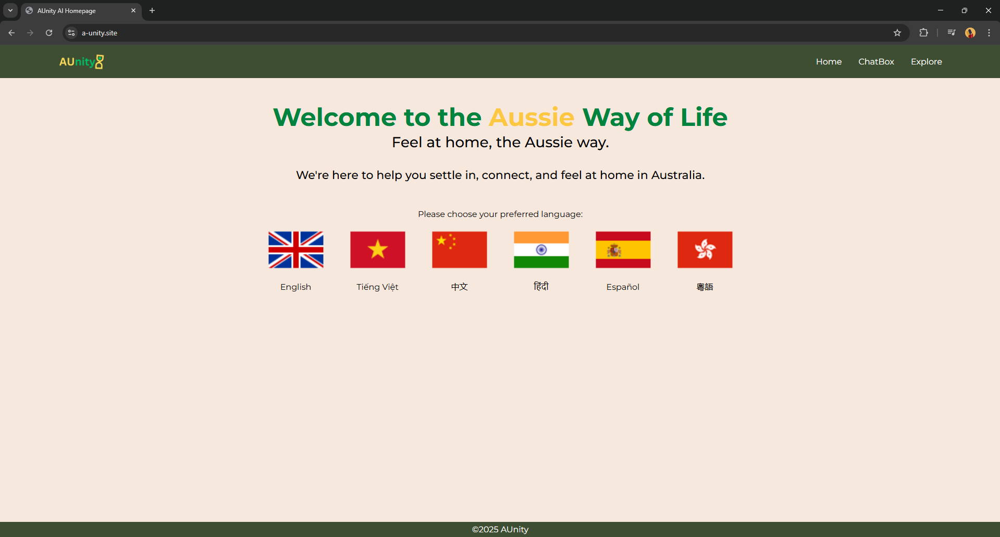

Honours thesis
My honours project explores the application of machine learning to forecast daily patient arrivals in the emergency department.
iOS cricket app
During my undergraduate studies, I completed a mobile application development course where I built a cricket scoring app for native iOS.
Flutter cricket app
As part of the same mobile application development course, I built a cricket scoring app using Flutter, focusing on cross-platform development.
EPL Winner Prediction
This practice project explores how web scraping and machine learning with Python can be used to analyse and predict outcomes in the English Premier League (EPL).
AUnity (GovHack 2025)
